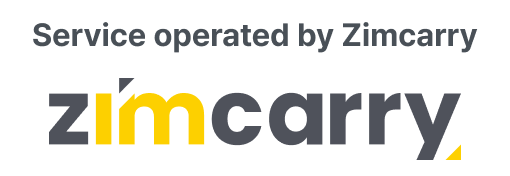

여행 정보Travel Information
대부분의 해외 참가자는 인천국제공항(ICN)으로, 일부는 김포국제공항(GMP)으로 입국합니다. 두 공항 모두 직행 시외버스 또는 KTX(서울역 경유)로 강릉까지 이동합니다. 공항별 상세 경로는 아래 공항 → 강릉에서 확인하세요.Most international participants arrive at Incheon Int'l Airport (ICN), and some at Gimpo Int'l Airport (GMP). From either airport you can reach Gangneung by direct intercity bus or KTX (via Seoul Station). See the detailed routes per airport under To Gangneung below.
공항에서 강릉까지From the airport to Gangneung
인천·김포공항 · 버스·KTX 상세 경로 (출처: 공식 사이트 · 평일 기준)Incheon & Gimpo airports · detailed bus & KTX routes (source: official site · weekdays)
Part 1. 인천국제공항 출발Part 1. From Incheon Int'l Airport
[Step 1] 인천공항 → 서울역[Step 1] Incheon Airport → Seoul Station
| 수단Mode | 소요Time | 요금Fare |
|---|---|---|
| AREX 직통열차 (논스톱)AREX Express (non-stop) | 50분50 min | ₩13,000 |
| 리무진버스 6001Limousine Bus 6001 | 약 1h40m~1h40m | ₩17,000 |
| 리무진버스 6702Limousine Bus 6702 | 약 1h30m~1h30m | ₩18,000 |
| 택시Taxi | 약 1h10m~1h10m | ₩60,000~ |
버스 티켓 — T1 4·6·8·10번 출구 옆 / T2 교통센터 B1F. 6001: 탑승 T1 1층 5번·T2 B1F 29번 / 6702: T1 1층 3번·T2 B1F 18번.Bus tickets — beside T1 Exits 4·6·8·10 / T2 Transportation Center B1F. 6001: board T1 1F stop 5 · T2 B1F stop 29 / 6702: T1 1F stop 3 · T2 B1F stop 18.
[Step 2] 서울역 → 강릉역 (KTX) (사전 예매 권장)[Step 2] Seoul Station → Gangneung Station (KTX) (advance booking recommended)
서울역 매표소에서 KTX 티켓 구매. 강릉은 인기 관광지로 좌석이 한정되니 도착 즉시 예매를 권장합니다. (약 2시간 / ₩27,600~33,100, 좌석 등급에 따라 상이)Buy KTX tickets at the Seoul Station counter. Gangneung is a popular destination and seats are limited, so booking on arrival is recommended. (~2 hours / ₩27,600–33,100, varies by seat class)
[Step 3] 강릉역 → 행사장 (택시)[Step 3] Gangneung Station → venue (taxi)
3번 출구로 나와 택시 탑승, 약 5분(₩5,000). 또는 역·터미널 순환 셔틀.Take Exit 3 and a taxi, ~5 min (₩5,000). Or use the Station Loop shuttle.
시외버스터미널Gangneung
Bus Terminal직행버스Direct
[Step 1] 직행 시외버스 티켓 구매 (사전 예매 권장)[Step 1] Buy a direct intercity bus ticket (advance booking recommended)
인천공항 매표소·키오스크에서 강릉행 직행버스 티켓 구매. 좌석이 한정되어 사전 예매를 권장합니다. (소요 약 3h55m / ₩37,600~45,300, 버스 등급에 따라 상이)Buy a direct Gangneung-bound ticket at the airport counter or kiosk. Seats are limited, so advance booking is recommended. (~3h55m / ₩37,600–45,300, varies by bus class)
- T1 매표소 — 1층 4·6·8·10번 출구 옆 (4번 04:30~01:30 / 6·8·10번 05:40~22:20)T1 counter — 1F beside Exits 4·6·8·10 (Exit 4: 04:30–01:30 / Exits 6·8·10: 05:40–22:20)
- T2 매표소 — 교통센터 지하 1층 버스터미널 (04:00~24:00)T2 counter — Transportation Center B1F bus terminal (04:00–24:00)
[Step 2] 버스 탑승[Step 2] Board the bus
- 탑승 위치 (T1) — 1층 13번 승차장Boarding (T1) — 1F stop 13
- 탑승 위치 (T2) — 교통센터 지하 1층 10번 승차장Boarding (T2) — Transportation Center B1F stop 10
버스는 정시 출발하므로 미리 승차장에 도착하세요.Buses depart on time, so arrive at the platform early.
운행 시간표 (평일)Timetable (weekdays)
T1 출발From T1
T2 출발From T2
[Step 3] 강릉터미널 → 행사장 (택시)[Step 3] Gangneung Terminal → venue (taxi)
강릉시외버스터미널에서 택시로 컨벤션센터까지 약 15분(₩8,000). 또는 무료 역·터미널 순환 셔틀.From Gangneung Intercity Bus Terminal, ~15 min by taxi to the convention center (₩8,000). Or the free Station Loop shuttle.
Part 2. 김포국제공항 출발Part 2. From Gimpo Int'l Airport
[Step 1] 김포공항 → 서울역[Step 1] Gimpo Airport → Seoul Station
| 수단Mode | 소요Time | 요금Fare | 비고Notes |
|---|---|---|---|
| 공항철도 (일반, 완행)Airport Railroad (all-stop) | 40분 min (도보 20분 포함) (incl. 20 min walk) | ₩1,750 | 예약 불필요 · 5~8분 간격No booking · every 5–8 min |
| 택시Taxi | 약 50분~50 min | ₩30,000~ | — |
| 시내버스 605City Bus 605 | 약 1h20m~1h20m | ₩1,500 | 7~11분 간격 · 짐 공간 제한Every 7–11 min · limited luggage space |
공항철도 — 김포공항역 지하 1층에서 교통카드 구매 후 서울역 방면 탑승. 버스 605 — 국제선청사 4번 승차장 → 서울역 10~12번 출구 앞 하차.Airport Railroad — buy a transit card at Gimpo Airport Station B1F and board toward Seoul Station. Bus 605 — International Terminal stop 4 → alight in front of Seoul Station Exits 10–12.
[Step 2] 서울역 → 강릉역 (KTX) (사전 예매 권장)[Step 2] Seoul Station → Gangneung Station (KTX) (advance booking recommended)
약 2시간 / ₩27,600~33,100 (좌석 등급에 따라 상이).~2 hours / ₩27,600–33,100 (varies by seat class).
[Step 3] 강릉역 → 행사장 (택시)[Step 3] Gangneung Station → venue (taxi)
3번 출구로 나와 택시 약 5분(₩5,000). 또는 역·터미널 순환 셔틀.Take Exit 3 and a taxi, ~5 min (₩5,000). Or the Station Loop shuttle.
시외버스터미널Gangneung
Bus Terminal
[Step 1] 직행 시외버스 티켓 구매 (사전 예매 권장)[Step 1] Buy a direct intercity bus ticket (advance booking recommended)
김포공항 키오스크에서 강릉행 직행버스 티켓 구매. (약 3h30m / ₩30,000~36,200, 등급에 따라 상이)Buy a direct Gangneung-bound ticket at a Gimpo Airport kiosk. (~3h30m / ₩30,000–36,200, varies by class)
- 국제선청사 — 2층 2번 게이트International Terminal — 2F Gate 2
- 국내선청사 — 1층 시외버스 매표소Domestic Terminal — 1F intercity bus ticket office
[Step 2] 버스 탑승[Step 2] Board the bus
- 국제선청사 — 2층 3번 승차장International Terminal — 2F stop 3
- 국내선청사 — 11-1번 승차장Domestic Terminal — stop 11-1
운행 시간표 (국제선청사 기준)Timetable (International Terminal)
※ 국내선청사 승차는 별도이며 시간표가 다소 상이할 수 있습니다.※ Domestic Terminal boarding is separate and its timetable may differ slightly.
[Step 3] 강릉터미널 → 행사장 (택시)[Step 3] Gangneung Terminal → venue (taxi)
택시로 약 15분(₩8,000). 또는 역·터미널 순환 셔틀.~15 min by taxi (₩8,000). Or the Station Loop shuttle.
전체 여정 — 강릉까지 오는 3가지 방법Full Journey — 3 ways to Gangneung
- 공항철도·버스 → 서울역Airport rail/bus → Seoul Station
- 서울역 → 강릉역 KTX (약 2시간)Seoul → Gangneung KTX (~2h)
- 강릉역 → 행사장 (셔틀·택시)Gangneung Stn → venue (shuttle/taxi)
- 공항 → 강릉시외버스터미널 (직행)Airport → Gangneung Bus Terminal (direct)
- 터미널 → 행사장 (셔틀·택시)Terminal → venue (shuttle/taxi)
- 기사 포함 도어투도어 예약Chauffeur, door-to-door
- 공항 → 행사장 직접 이동Airport → venue directly
※ 요금·시각은 참고용이며 실제 예매 시 변동될 수 있습니다.※ Fares/times are for reference and may vary at booking.
공항 ↔ 호텔 짐 배송Airport ↔ hotel baggage delivery
무거운 짐 없이 가볍게 이동Travel light, without heavy luggage
서비스 옵션Service options
- 도착 후 공항 지정 카운터에 짐 맡기기Drop your bags at the designated airport counter on arrival
- 짐 없이 가볍게 호텔로 이동Travel to your hotel hands-free
- 호텔 컨시어지에서 수령Collect at the hotel concierge

- 출발 전날 예약 필수Book by the day before departure
- 호텔 컨시어지에 짐 맡기기Leave your bags with the hotel concierge
- 공항까지 안전하게 운송Transported safely to the airport
- 체크인 전 지정 카운터에서 수령Collect at the designated counter before check-in
예약 방법How to book
포털에서 예약Book on the portal
이 포털의 예약 폼으로 가장 빠르게 예약하고 즉시 확인을 받으세요.Book fastest with this portal's form and get instant confirmation.
이메일 문의Email us
도착일·호텔명·항공편 정보를 ops@groundk.com으로 보내주세요.Send your arrival date, hotel and flight details to ops@groundk.com.
현장 접수On-site desk
인천·김포공항 도착 홀 또는 공식 호텔 컨시어지에서도 현장 접수가 가능합니다.Also available at the Incheon/Gimpo arrival halls or official hotel concierges.
짐 배송 서비스는 총회 공식 호텔에 투숙하는 참가자에 한해 이용 가능합니다. 배송 가능 중량·품목 제한이 있으며, 귀중품·위험물은 별도 처리됩니다. 자세한 사항은 예약 시 안내드립니다.Baggage delivery is available only to participants staying at an official congress hotel. Weight and item limits apply, and valuables/hazardous items are handled separately. Details are provided at booking.
